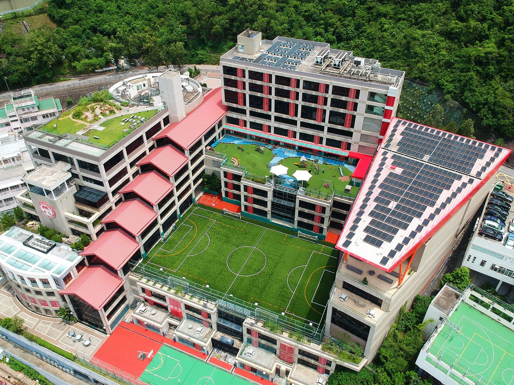
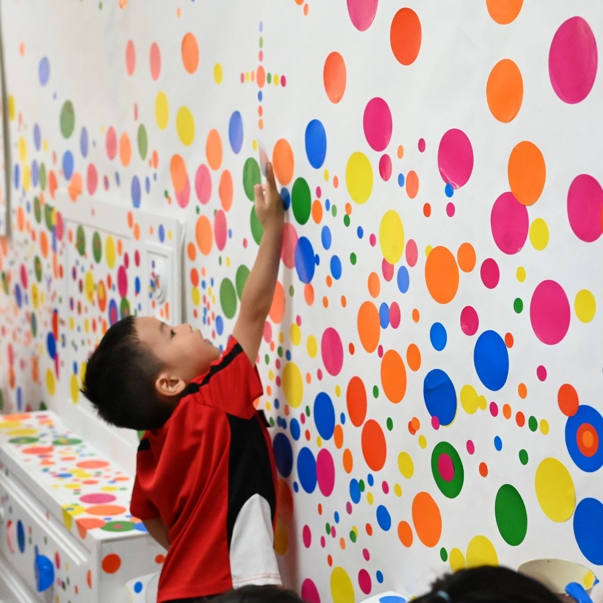
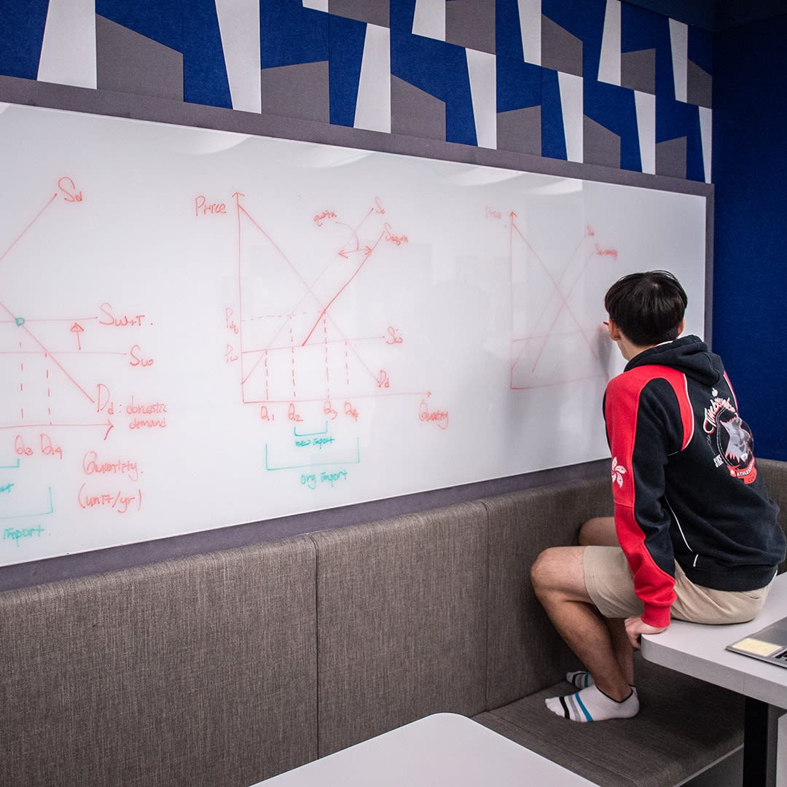
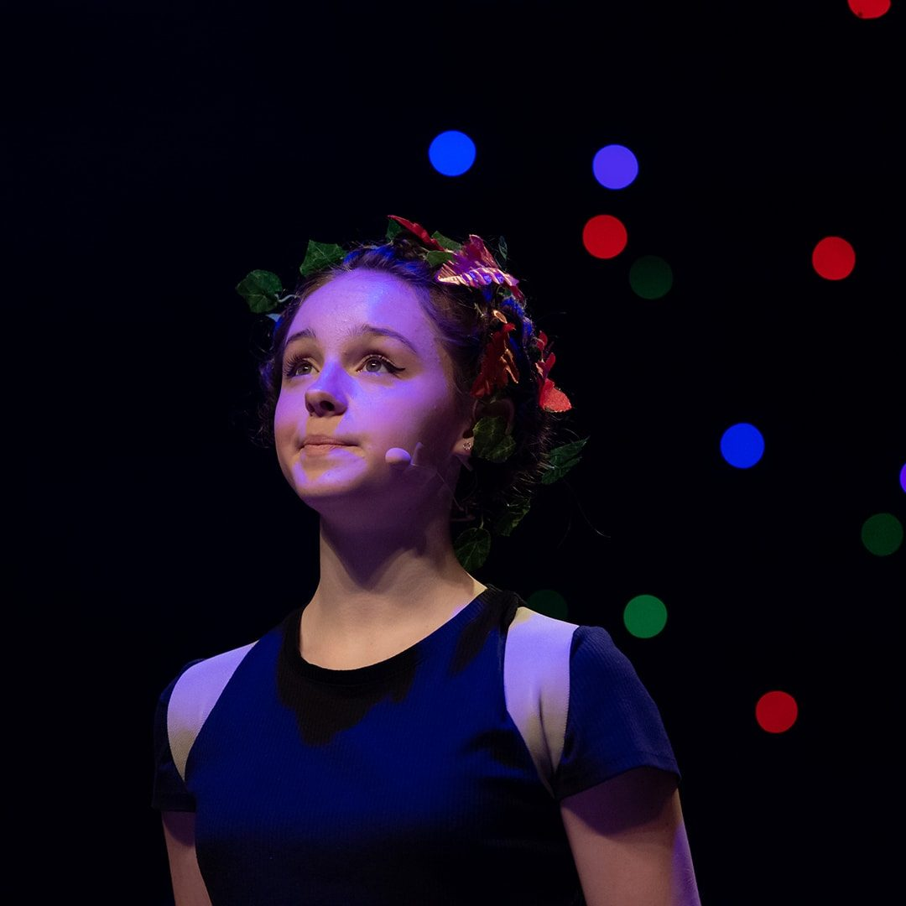
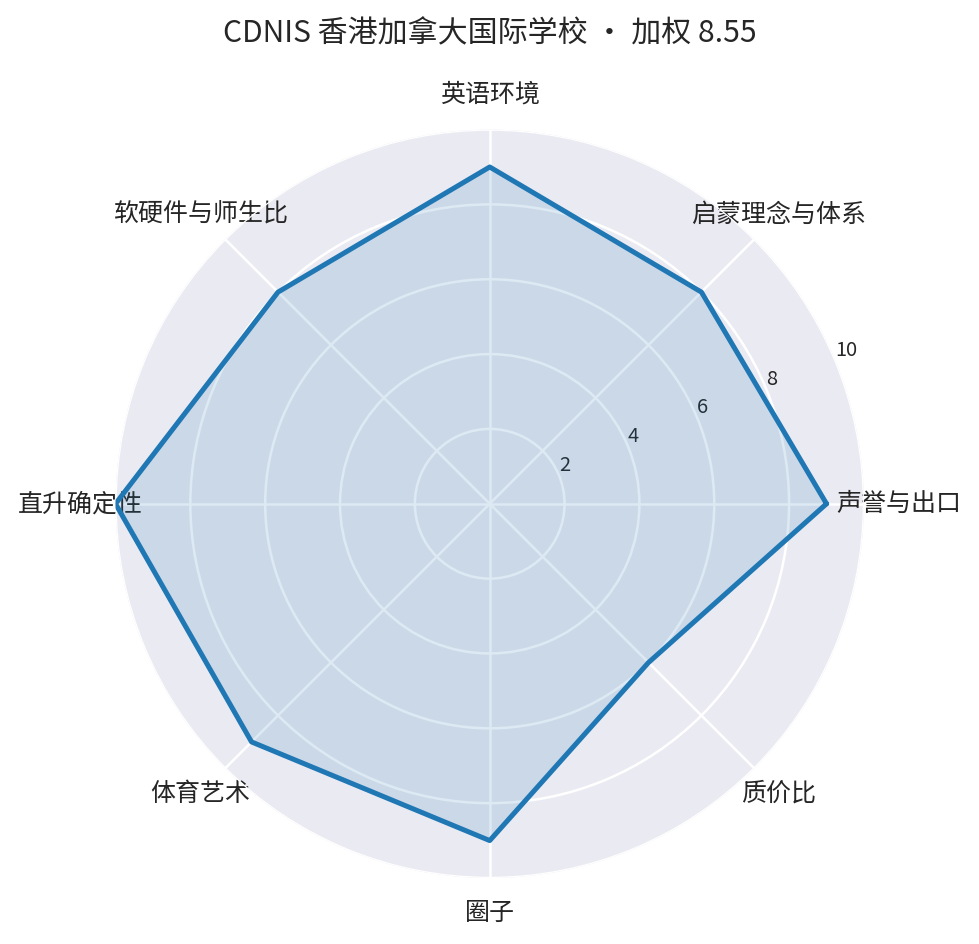

合适 · 但费用破锚点
国际线 · 主力
结论
但费用破锚点
校园实景




图片来自学校官网／公开页面（2026.9 抓取，仅作择校参考，版权归校方）
关键事实
| 位置 | 主校园：黄竹坑南朗山道36号（约3.1万㎡专用大校园）；Nursery–EY1 幼教中心 EYC：THE SOUTHSIDE 商场地下 G21–24 铺（约1.4万呎、2024.8新装修，teamLab装置）——幼儿段两年为商场铺位校舍（2026.9 核实，软硬件 9→8 扣分） |
|---|---|
| 2027 入口 | Nursery（2027/28：2024.9.1–2025.12.31 出生，麦兜 9.30 属窗口最年长端——幼儿评估优势位） |
| 费用 | Nursery 学费 142,780（2026/27）＋年资本征费 43,000（无债券者）＋一次性入学费 12,500＋报名费 2,350＋评估费 1,650＝首年现金约 20.2 万；另留位按金 80,000（可退，占用不计成本）；次年起约 18.6 万/年 |
| 申请节点 | Nursery 申请窗口 2026.11.1–11.30（一年仅 30 天，校方书面 2026.9 确认；官网 '10/2' 为 EY1–G5 截止口径，勿混淆）；评估在翌年 1–2 月 |
| 教学/师生比 | N–EY1 每班 16–18 人，教师＋助教双配置；Nursery 起即 IB PYP，可选中英双语班（一日英文一日中文） |
| 生源组成 | 约 2,100 人、40+ 国籍，近 90% 学生持外国护照；教师为英语/中文母语者 |
| 升学衔接 | Nursery→G12 一条龙；IB＋OSSD 双文凭；2024 届 IB 均分 38（99% 获文凭），2026 届均分 39；北美名校出口强（多伦多/UBC/普林斯顿/康奈尔等） |
| 地理弹性（居住未定下的适应力） | ●●○○○ 3/10（多校区/交通可达性；不进加权总分） |
优点
- 学术出口硬：IB 均分 38–39 + OSSD 双文凭，全球升学面最宽
- 幼教中心为 2024 年新建专用校园，teamLab 互动装置，硬件顶级
- 双语班从 Nursery 起步，中英都能保——契合'英语硬约束'且不丢中文
- 麦兜属窗口最年长端，评估中占优势
- Nursery 班额 16–18 人＋助教，关注度好
缺点 / 风险
- 费用破锚：首年约 27.8 万、续年约 18.6 万，超出 20 万/年教育锚点的上限区
- 南区黄竹坑，与新界东居住方案动线冲突（校车可达但通勤长）
- Nursery 一年只有 30 天申请窗口（11月），错过等一年
- 高选拔性：对英语（幼教段含普通话）水平有要求
- 资本征费 4.3 万/年为不可退持续支出，15 年全段约 407 万为候选中最贵
- ⚠️ Nursery–EY1 两年读 EYC（THE SOUTHSIDE 商场地下铺位，1.4 万呎新装修但非专用校园）——与墨尔文幼儿段同类扣分口径（2026.9 核实）
八维评分（1–10）与依据
| 维度 | 分 |
|---|---|
| 声誉与出口 | 9 |
| 启蒙理念与体系 | 8 |
| 英语环境 | 9 |
| 软硬件与师生比 | 8 |
| 直升确定性 | 10 |
| 体育艺术 | 9 |
| 圈子 | 9 |
| 质价比 | 6 |
| 加权总分（理念20/英语15/直升15/声誉10/软硬件10/体艺10/圈子10/质价比10） | 8.55 |

评分备注：声誉9（顶尖IB校）｜体系9（PYP+安大略+双语班）｜英语9（全英+双语可选）｜师生比8（16–18+助教；幼儿段两年在商场铺位 EYC，主校园为专用大校园——2026.9 核实扣分）｜衔接9（一条龙双文凭）｜费用可行5（破锚点+11月窗口紧）（备注文字沿用上轮六维口径，个别维度未展开体艺/圈子；以八维表格为准）
评分为研究员基于下列公开来源的综合判断，属主观加权，非官方排名；费用与招生口径以学校官网当年公告为准。